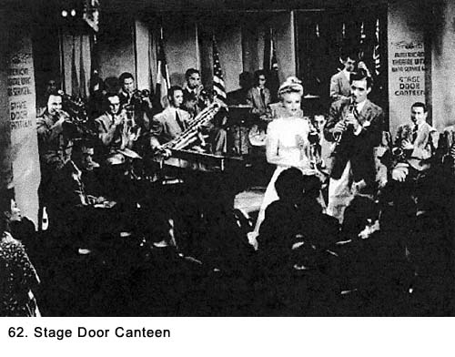

|
Table of Contents < - - - return Chapter 11 < - - - next
World War II Story by Robert F. Gallagher Chapter 10 - Camp Shanks and New York City However mean your life is,
meet it and live it; do not shun it and call it hard names. _______________________ At Camp Shanks, they were generous with passes, and I managed to get one every night we were there. My buddies and I always headed to the island of Manhattan to visit the many places of entertainment. On the first night, several of us went to the Stage Door Canteen (See Fig. 62),  located just off Broadway. It was a swinging spot that closely resembled a nightclub with a combo or a full sized orchestra playing great music. The place was crowded with servicemen from all branches, and there were lots of girls. The rumor back at camp was the hostesses were showgirls from Broadway plays, but that would prove to be an exaggeration. I asked one of the hostesses, who was pretty enough to have been a showgirl, to dance. After introductions, the first thing she asked was, "Did you see the movie Stage Door Canteen?" I told her, "Yes," and the next thing she said was: "Wasn't that silly when they said the hostesses here can't date the servicemen?" I took the hint immediately, and we met that evening and every night while I was in the New York area. I asked her if she was in show business, and she was somewhat vague about the answer. Later, I learned she was trying to get into the business but was working in a department store to earn a living until she got her break. She fixed up several of my friends with her friends. Those girls showed us a great time, and we really saw the nightlife of New York City. It was obvious this was not the first time they had followed this routine with servicemen. We knew they were just enjoying themselves at our expense, but, since we were doing exactly the same thing with them, it really didn't make any difference. We were all having a lot of fun, and the fact that they knew where the city's interesting places to visit were located made it party time every night. When our money started to run out, they paid some of the expenses. I was awed by the nightlife of New York City. The garish neon signs, jazz joints, dance halls, bars with entertainment, movies, noisy traffic, crowded streets, sleazy bars, dirty subways, outlandish people, and overall urban environment were both exciting and somewhat intimidating. While I was raised in another large city, I had been too young to participate in the nightlife there, which I am sure did not approach that of New York City. Even what I experienced in Hollywood, could not come close to matching what was going on in that dynamic city. The girl I was dating asked if I thought I would ever get to be an officer. The question stopped me cold. After a year and a half in service, I was still only a corporal. At that rate, it would take me about twenty years to become a second lieutenant. That is, if promotions were based on seniority, which they weren't. I don't think she was putting me down but she, like all young ladies, would have liked to be seen dating an officer much more than an enlisted man. It was the uniform, right? I told her I expected to get a commission soon after we got overseas, and she looked like she believed me. If she was going to ask a dumb question, she would get an even dumber answer. One morning, we got back to camp so late we had to run down the camp street at 0530 hours and were barely in time to make roll call. We stayed at this camp for five days, and the nightlife of New York City was taking its toll. We were all staying out so late every night we were starting to wear out physically. Because I had all the information about our outfit's equipment from packing it, every day I would give some excuse to the brass about why I had to go to the warehouse where it was stored to check it out. I would select my buddies to go with me on the pretext we would have to open some boxes and move the contents. During the afternoons at the warehouse we would lock the door from the inside, climb on the wooden boxes and take a badly needed two-hour siesta. Sometimes it was longer and it was often the only sleep we had. Finally, we were told that we were on alert. We knew we would be leaving soon. We left Camp Shanks by train at about 2030 hours on Sunday night that took us south to the ferry terminal at Weekhawken, New Jersey. There we transferred to ferries for the trip to the 42nd Street dock in the Port of Manhattan. When we got out on the dock proper, we noticed there was a very large ship on the left side of the dock and one considerably smaller on the right side. The word was passed around that the big ship was the Gray Lady, better known as the Queen Mary. She had been camouflaged early in the war with a dull gray paint that at first glance made her look more like a non-descript warehouse than an ex-luxury ship. We did not have to be told she was one of the world's largest passenger liners. We found out she was the second biggest in the world at that time with only the Queen Elizabeth1 being larger. We were all hoping we would turn left when we got on the dock. No such luck. When our names were called out, we turned right to go up the gangplank to the smaller ship. A small Army band played on the dock near the place the Queen Mary was loading, but they were so far away we could barely hear them. Once on board, we were directed to our berths. It was all very exciting. Being on board a ship was a first for most all. As we moved into our final quarters for the first time, the shock at seeing our new home dampened any positive feelings. We realized there was no way this trip could be a pleasant experience in such a crowded place. Chapter 11 < - - - next Table of Contents < - - - return
Footnotes and Source of Photographs. Copyright, Robert F. Gallagher, 1999 - 2015, all rights reserved on all images and content. |